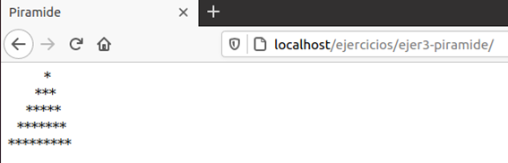
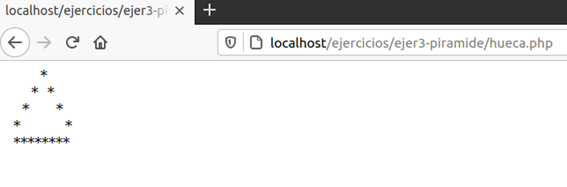

Unidad 2 - Relación 1
- tipos
Crear tres variables: país, habitantes y continente a los que les darás un valor.
A continuación, muestra su valor por pantalla junto con el tipo de dato que tiene cada una de ellas.
- printf - round
Escribe un programa que calcule la longitud, la superficie y el volumen de una esfera dado el radio.
Se pide que el resultado, en todos los casos, solo con dos decimales.
Ilustra las diferencias entre usar la función round() y la función printf().
Para obtener el valor de pi existe una función de PHP.
- ecuación segundo grado
Escribe un programa que resuelva una ecuación de segundo grado.
Aprovecha para ilustrar la diferencia entre echo, print y printf.
Recuerda que aún no sabemos cómo recoger valores desde el teclado.
- conversor dólar
Realiza un conversor de euros a dólares.
- fechas suma y resta
Dado que una fecha se guarda en formato de tiempo, o se puede convertir a dicho formato en caso de que sea una cadena, parece lógico pensar que se puede añadir o restar tiempo a las fechas. Es así, aunque no es tan fácil como sumar o restar directamente una cierta cantidad de días a la fecha base.
En este ejercicio se pide que averigües cómo se puede sumar o restar una cantidad de tiempo a una fecha y que apliques ese conocimiento para mostrar por pantalla la fecha de hoy, la de ayer y la de mañana.
Para poder resolver el ejercicio tienes que investigar las funciones date() y strtotime()
La función strtotime(), en principio, sirve para convertir una variable de tipo string a otra de tipo fecha, pero la propia función permite realizar operaciones de suma o resta de cantidades de tiempo para obtener una fecha distinta. Ten en cuenta que, para sumar o restar a la fecha, deberás convertirla a formato tiempo, pero para mostrarla por pantalla necesitarás volverla a convertir a formato cadena.
Ejemplo:
- strtotime(fecha1) la convertiría en una variable de tipo fecha, pero la fecha seguiría siendo la misma;
- strtotime(+1year, fecha1) la convierte en un valor de tipo fecha, pero sumándole un año;
- strtotime(-2month, fecha1) la convierte en un valor de tipo fecha, pero restándole dos meses.
- cadena al revés
Dada una variable que contenga una cadena de varios caracteres, escribe un script que nos permita escribir esa cadena al revés (empezando desde la última letra y acabando en la primera) sin hacer uso de la función strrev(). Para solucionarlo tienes que tener en cuenta que existen funciones que permiten extraer el carácter que ocupa una posición determinada de una cadena. Por otro lado, tienes que trabajar con estructuras iterativas, para recorrer las distintas posiciones que tiene una cadena. Eso sí, necesitamos conocer su longitud, pero para eso también tenemos funciones de cadena.
Ten en cuenta que si hay caracteres especiales, como eñes o letras con tilde, ocupan más de un byte y no se mostrarán adecuadamente. Busca la función adecuada e cadenas de caracteres que debes usar.
- pirámide
Escribe un programa que pinte por pantalla una pirámide rellena a base de asteriscos.
La base de la pirámide debe estar formada por 9 asteriscos.
El resultado debe de ser algo parecido a esto:

Puedes utilizar la entidad de caracter "non breaking space" para separar las palabras de tu menú de navegación tanto como quieras. (Recuerda que debes usar tantos como espacios en blanco quieras incluir ya que si pones los espacios en blanco directamente el navegador los agrupará como si fuese uno solo).
- pirámide hueca
Modifica el ejercicio anterior para que la pirámide sea hueca y tenga este aspecto:

- nombres de números
Escribe un programa que muestre en pantalla los nombres en inglés de los diez primeros números naturales y su correspondiente traducción al castellano.
Las palabras deben de estar distribuidas en dos columnas. (Uso de la etiqueta <table> de HTML).
- pares
Escribe un script que muestre por pantalla todos los números pares del 1 al 100